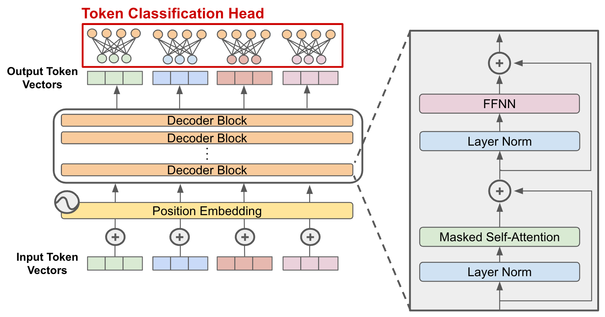
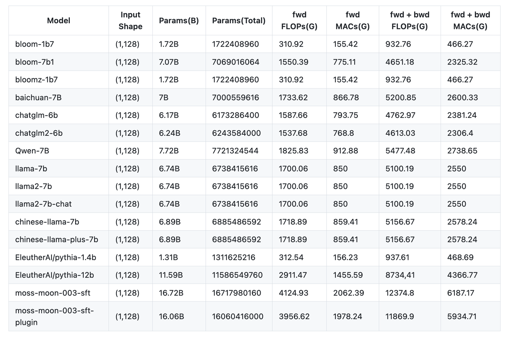

CODE 01: 拆解 Transformer-Decoder#
近年来，大型语言模型（LLMs）的发展令人瞩目，而它们中的绝大多数，例如著名的 GPT 系列，都构建于一种优雅而强大的架构之上——Transformer-Decoder。

许多初学者在使用这些模型时，往往将其视为一个黑箱。我们调用 model.forward()，然后奇迹就发生了。但是，模型内部究竟发生了什么？一个拥有数百亿参数的模型，其大小是如何计算的？当我们输入一段文本时，计算机会执行多少次浮点运算？为什么在生成长文本时，我们会遇到所谓的“显存瓶颈”？
我们将从零开始，用 Python 来定义一个 Transformer-Decoder 模型，然后像解剖一只麻雀一样，细致地分析它的每一个组成部分：
参数量 (Parameters)：模型的“体重”是多少？参数都分布在哪里？
计算量 (FLOPs)：模型进行一次推理需要“消耗”多少计算资源？
中间激活 (Activations)：训练过程中，是什么在悄悄“吃掉”我们的显存？
KV Cache：在推理（Inference）时，让模型高效生成文本的“记忆”机制是什么？
1. 精简 Transformer-Decoder#
理论总是需要实践来验证。为了方便分析，我们首先需要用代码定义出今天的主角。我们将使用 PyTorch 来构建一个 Transformer-Decoder 模型。
首先，我们定义一个配置类 ModelArgs，规定了模型的所有核心超参数。
import torch
import torch.nn as nn
from dataclasses import dataclass
import math
@dataclass
class ModelArgs:
dim: int = 512 # 模型的嵌入维度 (Embedding Dimension)，通常也称为 n_embd
n_layers: int = 8 # Transformer Block 的层数
n_heads: int = 8 # 多头注意力机制中的头数
vocab_size: int = 32000 # 词汇表大小
max_seq_len: int = 2048 # 模型能处理的最大序列长度
# 为了方便，我们让每个头的维度是 dim / n_heads
@property
def head_dim(self):
return self.dim // self.n_heads
# 实例化配置
args = ModelArgs()
print(args)
这个配置定义了一个相对小巧的模型：512 的嵌入维度、8 个 Transformer 层、8 个注意力头。
2. 参数量分析#
参数量是衡量模型规模最直观的指标。一个模型的参数，本质上就是它在训练过程中学习到的所有权重（weights）和偏置（biases）的总和。

2.1 Embedding 层#
当一个词（Token）进入模型时，它首先需要被转换成一个稠密的向量。这个任务由词嵌入层完成。它本质上是一个巨大的查找表（Lookup Table），每一行代表词汇表中的一个词，每一列是这个词对应的向量表示。
原理：将一个 one-hot 编码的词索引映射到一个
dim维的向量。公式：该层的参数量为词汇表大小与嵌入维度的乘积。
其中 \(V\) 是 vocab_size，\(d\_{model}\) 是 dim。
让我们用代码来计算一下：
# 词嵌入层的参数
vocab_size = args.vocab_size
dim = args.dim
embedding_params = vocab_size * dim
print(f"词嵌入层的参数量: {embedding_params:,}")
2.2 Attention 层#
Transformer 的核心是由多个相同的 Block 堆叠而成。每个 Block 都包含两个关键组件：多头自注意力（Multi-Head Self-Attention） 和 前馈网络（Feed-Forward Network）。
a) 多头自注意力 (Multi-Head Self-Attention)
自注意力机制是 Transformer 的灵魂。在一个 Decoder 模型中，它允许每个位置的 Token 关注到它前面所有位置的 Token。为了生成 Query (Q), Key (K), 和 Value (V) 向量，输入向量 \(x\) 需要分别乘以三个权重矩阵 \(W\_q, W\_k, W\_v\)。在多头注意力中，这个过程会重复 n_heads 次。
输入 \(x \in \mathbb{R}^{d\_{model}}\) 会被线性投射到 Q, K, V。这三个投影矩阵是模型需要学习的参数。
还有一个最终的输出投影矩阵，用于将多头注意力的结果整合起来：
对于每一层的一个注意力模块，其参数量为：
# 计算一层注意力模块的参数
n_layers = args.n_layers
# Q, K, V, O 四个投影矩阵
attention_params_per_layer = 4 * (dim * dim)
print(f"每层自注意力模块的参数量: {attention_params_per_layer:,}")
# 总的注意力参数
total_attention_params = n_layers * attention_params_per_layer
print(f"所有 {n_layers} 层自注意力模块的总参数量: {total_attention_params:,}")
2.3 FFN 层#
前馈网络 (Feed-Forward Network, FFN) 为模型提供了非线性能力。它通常由两个线性层和一个非线性激活函数（如 GELU 或 SiLU）组成。第一个线性层将维度从 dim 扩大到一个中间维度（通常是 4 * dim），第二个线性层再将其恢复回 dim。
# 计算一层 FFN 的参数
# 第一个线性层: dim -> 4 * dim
# 第二个线性层: 4 * dim -> dim
ffn_params_per_layer = (dim * 4 * dim) + (4 * dim * dim)
print(f"每层 FFN 模块的参数量: {ffn_params_per_layer:,}")
# 总的 FFN 参数
total_ffn_params = n_layers * ffn_params_per_layer
print(f"所有 {n_layers} 层 FFN 模块的总参数量: {total_ffn_params:,}")
你可以看到，FFN 部分的参数量是注意力部分的两倍，是模型参数的主要构成部分。
2.4 输出层#
最后，模型需要一个输出层将最终的 Transformer Block 输出的向量转换回词汇表大小的 logits，用于预测下一个词。这个层通常是一个与词嵌入层权重共享（或不共享）的线性层。
output_params = dim * vocab_size
print(f"输出层的参数量: {output_params:,}")
2.5 汇总与验证#
现在，将所有部分的参数加起来，得到模型的总参数量。我们还会加上一些通常被忽略但确实存在的参数，比如 LayerNorm 层的参数（每个 LayerNorm 有 weight 和 bias 两个参数，维度为 dim）。每个 Transformer Block 中有两个 LayerNorm。
# LayerNorm 参数
layernorm_params_per_layer = 2 * dim # weight + bias
total_layernorm_params = n_layers * 2 * layernorm_params_per_layer # 每个 block 有两个 layernorm
total_params = (
embedding_params +
total_attention_params +
total_ffn_params +
total_layernorm_params +
output_params
)
print(f"词嵌入层参数: {embedding_params:,}")
print(f"注意力总参数: {total_attention_params:,}")
print(f"FFN 总参数: {total_ffn_params:,}")
print(f"LayerNorm 总参数: {total_layernorm_params:,}")
print(f"输出层参数: {output_params:,}")
print("-----------------------------------------")
print(f"模型总参数量 (估算): {total_params:,} ({total_params/1e6:.2f}M)")
可以尝试调整 ModelArgs 中的配置，看看参数量是如何随之变化的。例如，将 dim 翻倍，参数量会大致变为原来的四倍，因为它主要受 \(d\_{model}^2\) 项的影响。
3. 计算量分析 FLOPs#
参数量描述了模型的静态大小，而计算量 FLOPs（浮点运算次数来衡量）则描述了模型在前向传播的动态消耗。

我们主要关注计算量最大的部分：矩阵乘法。一个维度为 \((m \times n)\) 的矩阵与一个维度为 \((n \times p)\) 的矩阵相乘，其计算量约为 \(2 \times m \times n \times p\) FLOPs。
假设我们的输入批次大小为 \(B\)，序列长度为 \(S\)。
3.1 Attention 计算量#
Q, K, V 投影：输入 \(X \in \mathbb{R}^{B \times S \times d\_{model}}\) 与 \(W\_q, W\_k, W\_v \in \mathbb{R}^{d\_{model} \times d\_{model}}\) 相乘。
注意力分数计算 (\(QK^T\))：\(Q \in \mathbb{R}^{B \times S \times d\_{model}}\) 与 \(K^T \in \mathbb{R}^{B \times d\_{model} \times S}\) 相乘。
分数与 V 的加权和：注意力分数矩阵 \(\in \mathbb{R}^{B \times S \times S}\) 与 \(V \in \mathbb{R}^{B \times S \times d\_{model}}\) 相乘。
输出投影：结果与 \(W\_o \in \mathbb{R}^{d\_{model} \times d\_{model}}\) 相乘。
注意，在这些计算中，与 \(S^2\) 相关的项是计算的瓶颈，这就是为什么长序列处理成本高昂的原因。
3.2 FFN 计算量#
第一个线性层：输入 \(\in \mathbb{R}^{B \times S \times d\_{model}}\) 与 \(W\_1 \in \mathbb{R}^{d\_{model} \times 4d\_{model}}\) 相乘。
第二个线性层：中间结果 \(\in \mathbb{R}^{B \times S \times 4d\_{model}}\) 与 \(W\_2 \in \mathbb{R}^{4d\_{model} \times d\_{model}}\) 相乘。
3.3 估算总计算量#
让我们用代码将这些公式实现，并计算一个前向传播的总 FLOPs。
def estimate_flops(args: ModelArgs, batch_size: int, seq_len: int):
# 为了简化，我们只关注主要的矩阵乘法
d = args.dim
n_layers = args.n_layers
# 1. 注意力部分 (每层)
# QKV 投影
flops_qkv = 3 * (2 * batch_size * seq_len * d * d)
# 注意力分数 (QK^T)
flops_scores = 2 * batch_size * seq_len * seq_len * d
# 加权和 (Scores * V)
flops_weighted_sum = 2 * batch_size * seq_len * seq_len * d
# 输出投影
flops_o = 2 * batch_size * seq_len * d * d
flops_attn_per_layer = flops_qkv + flops_scores + flops_weighted_sum + flops_o
# 2. FFN 部分 (每层)
flops_ffn_per_layer = (2 * batch_size * seq_len * d * (4*d)) + \
(2 * batch_size * seq_len * (4*d) * d)
# 3. 总计算量
total_flops = n_layers * (flops_attn_per_layer + flops_ffn_per_layer)
# 不要忘记最后的输出层
total_flops += 2 * batch_size * seq_len * d * args.vocab_size
return total_flops
# 假设 batch_size=1, seq_len=1024
flops = estimate_flops(args, batch_size=1, seq_len=1024)
print(f"对于一个序列 (B=1, S=1024) 的前向传播计算量约为: {flops/1e9:.2f} GFLOPs")
这个结果告诉我们，即使是这样一个小型模型，处理一个长度为 1024 的序列也需要数十亿次的浮点运算。
4. 显存分析#
模型在 GPU 上运行时，显存通常是最大的限制因素。显存的消耗主要来自四个方面：模型参数、优化器状态、梯度和 中间激活。前三者相对固定，而中间激活是与输入数据大小直接相关的变量。
4.1 中间激活#
在训练过程中，为了计算梯度，我们需要存储前向传播过程中几乎所有计算的输出。这些存储的张量就是“中间激活”(Intermediate Activations)。
哪里消耗最大？ 通常，FFN 层的扩展部分是最大的激活值。
对于 FFN 的第一个线性层之后，激活张量的形状是 \((B, S, 4 \times d\_{model})\)。如果使用 32 位浮点数（4 字节），其占用的显存为：
同时，注意力分数矩阵 \((B, S, S)\) 也是一个主要的显存消耗者，尤其是在长序列下。
def estimate_activation_memory(args: ModelArgs, batch_size: int, seq_len: int, dtype_bytes=4):
d = args.dim
# FFN 中间激活
mem_ffn = batch_size * seq_len * (4 * d) * dtype_bytes
# 注意力分数激活 (假设需要存储)
mem_attn_scores = batch_size * args.n_heads * seq_len * seq_len * dtype_bytes
print(f"FFN 激活显存 (B={batch_size}, S={seq_len}): {mem_ffn / 1024**2:.2f} MB")
print(f"注意力分数激活显存: {mem_attn_scores / 1024**2:.2f} MB")
# 这只是冰山一角，实际总激活量会更大
estimate_activation_memory(args, batch_size=4, seq_len=1024)
这个计算清楚地表明，序列长度 \(S\) 对显存的压力是二次方的，这就是为什么在训练时我们很难使用非常长的序列。
4.2 KV Cache#
如果每次都对完整的序列进行计算，那将是极大的浪费，因为对于 "Hello" 部分的 Key 和 Value 向量是不会改变的。KV Cache 就是为了解决这个问题而生的。
在生成第 \(t\) 个 token 时，我们只计算当前 token 的 Q 向量，然后从缓存中读取前面所有 \(t-1\) 个 token 的 K 和 V 向量。这样，注意力计算的复杂度就从 \(O(S^2)\) 降低到了 \(O(S)\)。
对于模型的每一层，我们需要缓存 Key 和 Value 向量。大小计算：
其中 2 代表 Key 和 Value 两个部分。
def estimate_kv_cache_memory(args: ModelArgs, batch_size: int, seq_len: int, dtype_bytes=2):
# 推理时常用 float16 或 bfloat16，所以是 2 字节
d = args.dim
n_layers = args.n_layers
# 每个 token 的 K 和 V 向量都需要存储
# 形状为 (n_layers, 2, batch_size, seq_len, dim)
cache_size = n_layers * 2 * batch_size * seq_len * d * dtype_bytes
return cache_size
# 计算当上下文窗口达到最大长度时的 KV Cache 大小
max_len = args.max_seq_len
kv_cache_mem = estimate_kv_cache_memory(args, batch_size=1, seq_len=max_len)
print(f"当序列长度为 {max_len} 时，KV Cache 将占用: {kv_cache_mem / 1024**2:.2f} MB")
这个结果解释了为什么即使在推理时，长上下文窗口也会消耗大量显存。每一层、每一个 token 的 K 和 V 状态都需要被精确地“记忆”下来。
5. 总结与思考#
通过这次深入的剖析，我们不再将 Transformer-Decoder 视为一个神秘的黑箱。我们亲手用公式和代码量化了它的核心特性：
参数量主要由模型的维度 dim 和层数 n_layers 的平方项决定，其中 FFN 占大头。计算量在前向传播中与序列长度 seq_len 的平方成正比，这是处理长文本的性能瓶颈。
训练显存消耗巨大，其中中间激活是主要元凶，它同样受到序列长度平方的影响。推理显存的关键在于 KV Cache，它的大小与序列长度成线性关系，决定了模型能处理的最大上下文长度。